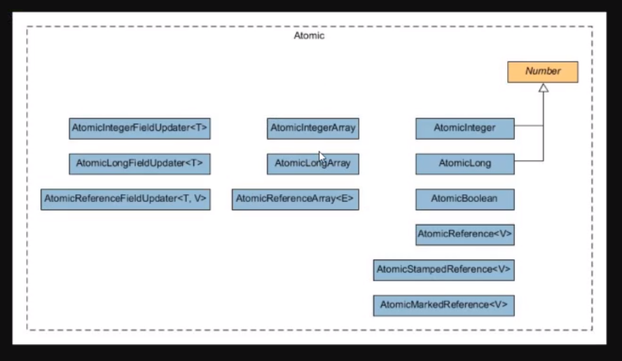

CAS¶
https://en.wikipedia.org/wiki/Compare-and-swap
- lock-free
Могут присутствовать потоки, которые по CAS операциям всегда проигрывают (естественно без локов на другие потоки)
- wait-free
Каждый из потоков должен быть завершен за конечное число шагов (естественно без локов на другие потоки)
Todo
Описание что такое CAS. VarHandle
Atomics¶

ABA-problem¶
Note
То что решается с помощью AtomicMarkableReference и AtomicStampedReference